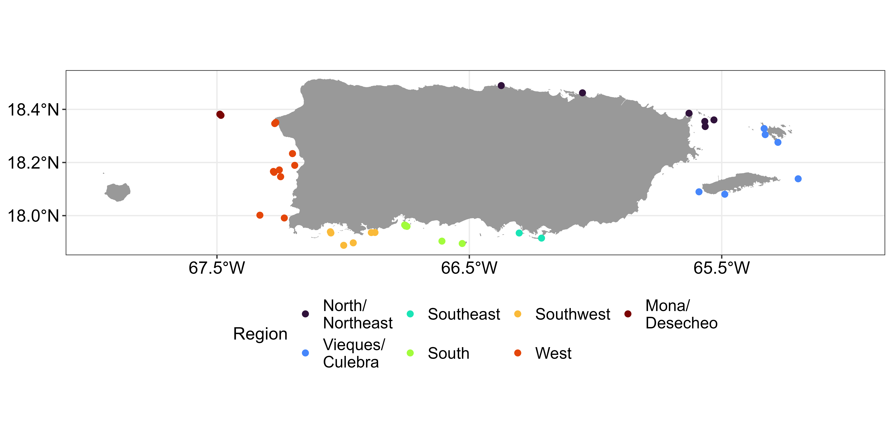
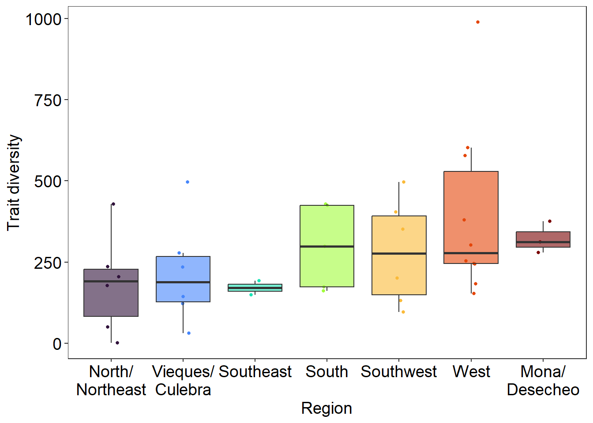
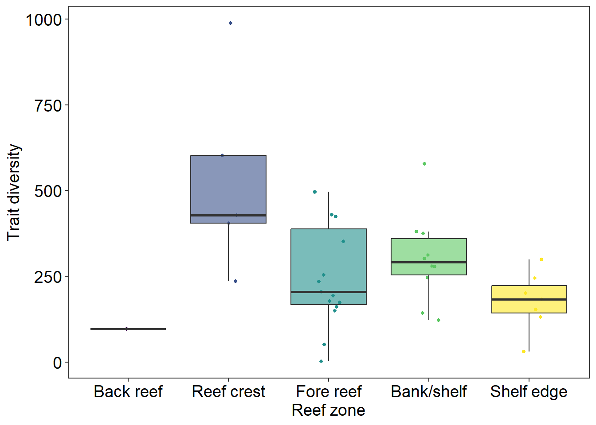
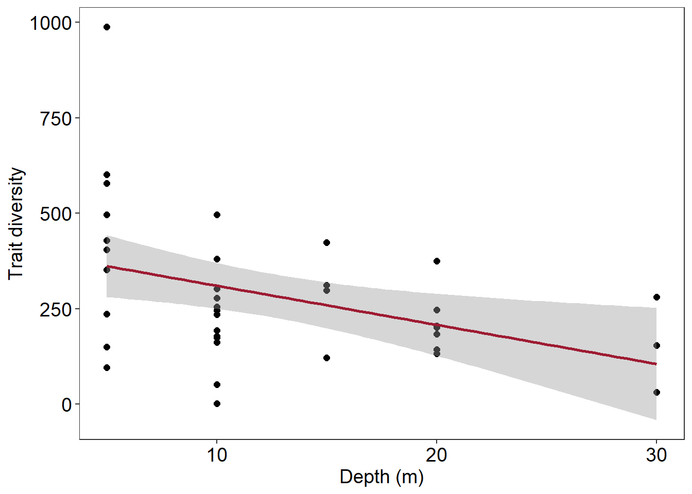
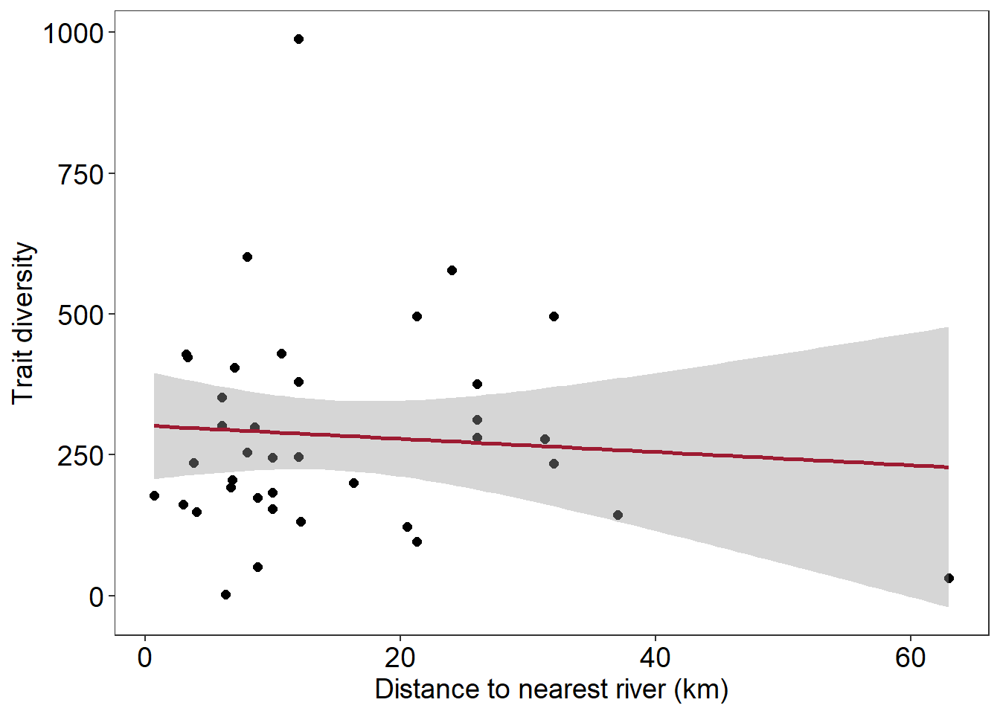
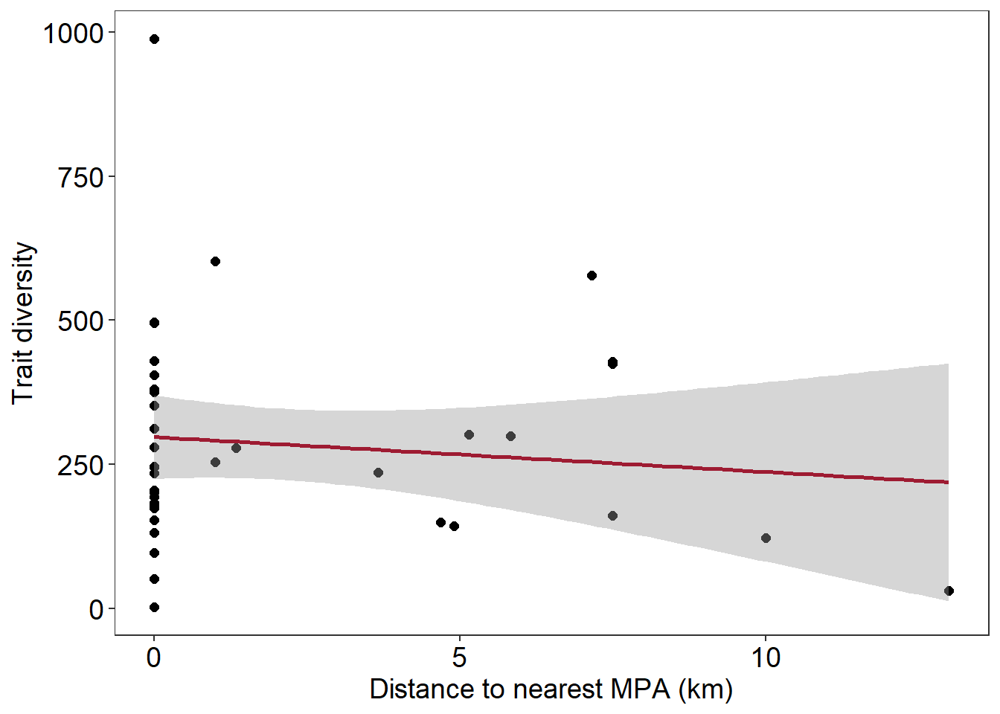
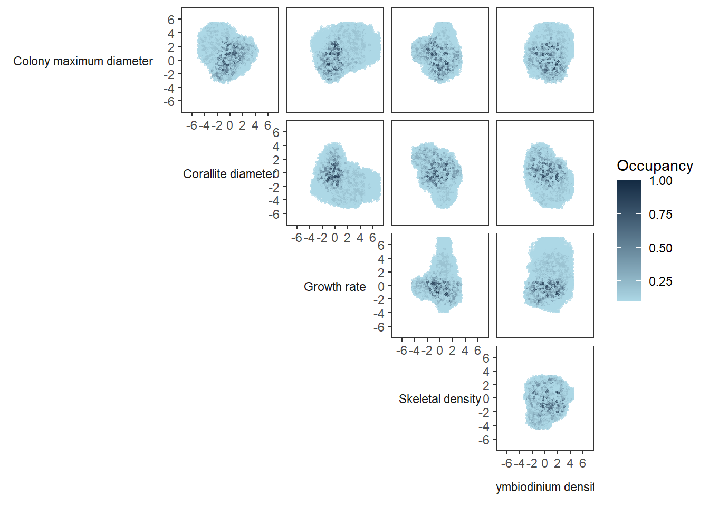
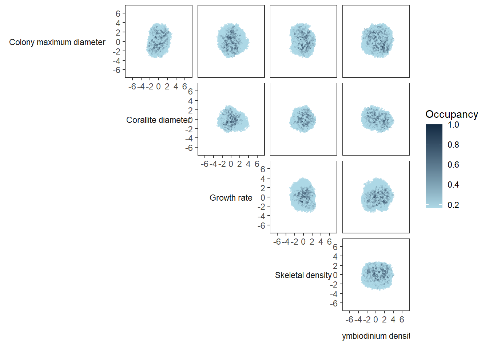
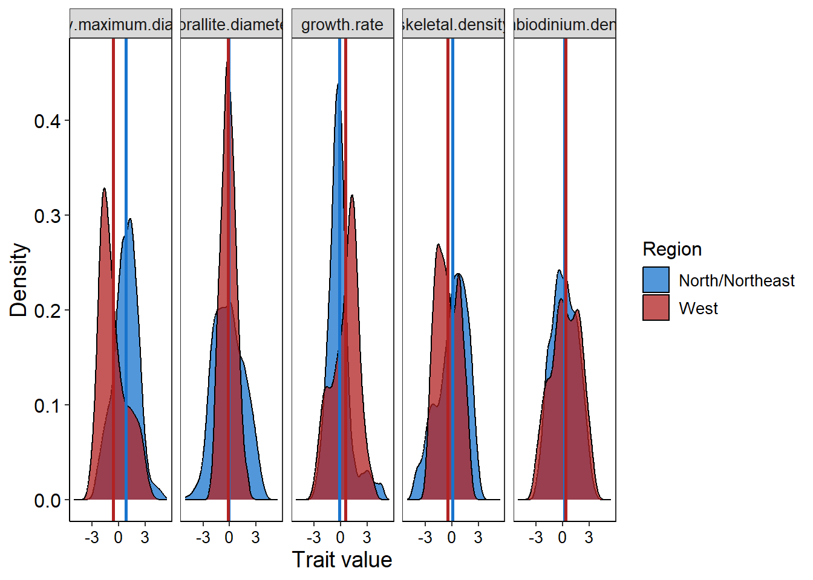

# load libraries
library(tidyverse)
## ── Attaching core tidyverse packages ──────────────────────── tidyverse 2.0.0 ──
## ✔ dplyr 1.1.4 ✔ readr 2.1.5
## ✔ forcats 1.0.0 ✔ stringr 1.5.1
## ✔ ggplot2 3.5.1 ✔ tibble 3.2.1
## ✔ lubridate 1.9.3 ✔ tidyr 1.3.1
## ✔ purrr 1.0.2
## ── Conflicts ────────────────────────────────────────── tidyverse_conflicts() ──
## ✖ dplyr::filter() masks stats::filter()
## ✖ dplyr::lag() masks stats::lag()
## ℹ Use the conflicted package (<http://conflicted.r-lib.org/>) to force all conflicts to become errors
library(hypervolume)
## Loading required package: Rcpp
# load trait data
df_tr = read_csv('data/coral_traits.csv')
## Rows: 26 Columns: 6
## ── Column specification ────────────────────────────────────────────────────────
## Delimiter: ","
## chr (1): species
## dbl (5): corallite diameter, growth rate, skeletal density, symbiodinium den...
##
## ℹ Use `spec()` to retrieve the full column specification for this data.
## ℹ Specify the column types or set `show_col_types = FALSE` to quiet this message.
df_tr
## # A tibble: 26 × 6
## species `corallite diameter` `growth rate` `skeletal density`
## <chr> <dbl> <dbl> <dbl>
## 1 Acropora cervicornis -1.14 2.33 -0.0978
## 2 Acropora palmata -1.87 1.94 0.587
## 3 Agaricia agaricites -0.401 -1.46 0.935
## 4 Colpophyllia natans 2.36 -0.274 -2.47
## 5 Diploria labyrinthifor… 0.965 -0.562 -0.172
## 6 Montastraea cavernosa 0.792 -0.456 0.321
## 7 Orbicella annularis -0.289 -0.0359 0.373
## 8 Orbicella faveolata -0.326 0.103 -0.958
## 9 Orbicella franksi -0.0173 -0.329 1.08
## 10 Porites astreoides -0.962 -0.641 -0.0403
## # ℹ 16 more rows
## # ℹ 2 more variables: `symbiodinium density` <dbl>,
## # `colony maximum diameter` <dbl>
# load benthic community percent cover data across regions
# pc = percent cover 0-100
# pc_sd = standard deviation in percent cover
df_ben = read_csv('data/PR_coral_2021.csv')
## Rows: 332 Columns: 8
## ── Column specification ────────────────────────────────────────────────────────
## Delimiter: ","
## chr (4): site, region, reef_zone, species
## dbl (4): depth, dist_river, dist_mpa, pc
##
## ℹ Use `spec()` to retrieve the full column specification for this data.
## ℹ Specify the column types or set `show_col_types = FALSE` to quiet this message.
df_ben
## # A tibble: 332 × 8
## site region reef_zone depth dist_river dist_mpa species pc
## <chr> <chr> <chr> <dbl> <dbl> <dbl> <chr> <dbl>
## 1 beril southwest shelf edge 20 12.2 0 Agaricia agaricit… 0.842
## 2 beril southwest shelf edge 20 12.2 0 Madracis decactis 0.038
## 3 beril southwest shelf edge 20 12.2 0 Meandrina meandri… 0.268
## 4 beril southwest shelf edge 20 12.2 0 Montastraea caver… 1.74
## 5 beril southwest shelf edge 20 12.2 0 Orbicella annular… 2.60
## 6 beril southwest shelf edge 20 12.2 0 Orbicella faveola… 4.31
## 7 beril southwest shelf edge 20 12.2 0 Orbicella franksi 0.9
## 8 beril southwest shelf edge 20 12.2 0 Porites astreoides 1.24
## 9 beril southwest shelf edge 20 12.2 0 Porites porites 1.18
## 10 beril southwest shelf edge 20 12.2 0 Pseudodiploria st… 0.318
## # ℹ 322 more rowsWorkshop 4: Community traits
Trait diversity of coral communities in Puerto Rico
This vignette uses hypervolumes to understand the spatial variation in trait diversity of coral reef communities. Hypervolumes are generated using species trait data and weighted based on random percent cover of species from mean and sd across all sites within a region. This process is repeated 100 times. Hypervolume size is used to quantify the trait diversity of each community.
R script: github
data
The data used for this example comes from the NOAA which monitors coral benthic communities throughout Puerto Rico. The benthic cover data consists of percent cover (pc = mean percent cover) from coral species collected across each site in the 8 regions in 2021, as well as information about each site. Data is averaged across transects at each site. The coral trait data is based on average values of each trait for each species from published literature values. This dataset is z-scored already across all species for each trait.

Prep data
To generate hypervolumes we need to combine the trait data with all of the benthic site information.
df = df_ben |>
# join trait data to benthic data
inner_join(df_tr, by = 'species') |>
# drop species since don't need for hypervolume
select(-species)
df
## # A tibble: 332 × 12
## site region reef_zone depth dist_river dist_mpa pc `corallite diameter`
## <chr> <chr> <chr> <dbl> <dbl> <dbl> <dbl> <dbl>
## 1 beril southwe… shelf ed… 20 12.2 0 0.842 -0.401
## 2 beril southwe… shelf ed… 20 12.2 0 0.038 -0.104
## 3 beril southwe… shelf ed… 20 12.2 0 0.268 -0.104
## 4 beril southwe… shelf ed… 20 12.2 0 1.74 0.792
## 5 beril southwe… shelf ed… 20 12.2 0 2.60 -0.289
## 6 beril southwe… shelf ed… 20 12.2 0 4.31 -0.326
## 7 beril southwe… shelf ed… 20 12.2 0 0.9 -0.0173
## 8 beril southwe… shelf ed… 20 12.2 0 1.24 -0.962
## 9 beril southwe… shelf ed… 20 12.2 0 1.18 -0.104
## 10 beril southwe… shelf ed… 20 12.2 0 0.318 1.02
## # ℹ 322 more rows
## # ℹ 4 more variables: `growth rate` <dbl>, `skeletal density` <dbl>,
## # `symbiodinium density` <dbl>, `colony maximum diameter` <dbl>Hypervolumes
Here we nest two columns one with all of the data for the hypervolume (data) and one with a vector of the percent cover that will be used to weight the hypervolume (weight). Hypervolume size is extracted from each hypervolume using map_dbl() and get_size().
df_hv = df |>
group_by(site, region, reef_zone, depth, dist_river, dist_mpa) |>
# create a column for the percent cover to weight hypervolume as well as input data
nest(weight = pc, data = `corallite diameter`:`colony maximum diameter`) |>
# create community weighted hypervolumes
mutate(hv = map2(data,weight, \(data,weight) hypervolume_gaussian(data,
name = site,
weight = weight$pc,
samples.per.point = 1000,
kde.bandwidth = estimate_bandwidth(data),
sd.count = 3,
quantile.requested = 0.95,
quantile.requested.type = "probability",
chunk.size = 1000,
verbose = F)),
# extrace size for each hypervolume
hv_size = map_dbl(hv, \(hv) get_volume(hv)))** Do not try to view df in rstudio it will freeze your r since it is too big
head(df_hv)
## # A tibble: 6 × 10
## # Groups: site, region, reef_zone, depth, dist_river, dist_mpa [6]
## site region reef_zone depth dist_river dist_mpa weight data hv
## <chr> <chr> <chr> <dbl> <dbl> <dbl> <list> <list> <list>
## 1 beril south… shelf ed… 20 12.2 0 <tibble> <tibble> <Hypervlm>
## 2 boya … south… shelf ed… 20 16.3 0 <tibble> <tibble> <Hypervlm>
## 3 cabez… north… fore reef 10 8.8 0 <tibble> <tibble> <Hypervlm>
## 4 canal… viequ… fore reef 5 32 0 <tibble> <tibble> <Hypervlm>
## 5 canji… viequ… bank/she… 15 20.5 10 <tibble> <tibble> <Hypervlm>
## 6 carlo… viequ… fore reef 10 32 0 <tibble> <tibble> <Hypervlm>
## # ℹ 1 more variable: hv_size <dbl>Hypervolume size
We can look at how trait diversity varies across different gradients and variables.
# plot hypervolume size
d = df_hv |>
ungroup() |>
mutate(region = factor(region,
levels = c('north/northeast', 'vieques/culebra',
'southeast', 'south', 'southwest',
'west', 'mona/desecheo'),
labels = c('North/\nNortheast', 'Vieques/\nCulebra',
'Southeast', 'South', 'Southwest',
'West', 'Mona/\nDesecheo')),
reef_zone = factor(reef_zone,
levels = c("back reef", "reef crest",
"fore reef", "bank/shelf", "shelf edge"),
labels = c("Back reef", "Reef crest",
"Fore reef", "Bank/shelf", "Shelf edge")))
# plot by region
ggplot(d, aes(region, hv_size, fill = region))+
geom_point(aes(color = region), size = 1,
position=position_jitterdodge(dodge.width = 0.75, jitter.width = 1))+
geom_boxplot(alpha = 0.6, outliers = F)+
labs(x = 'Region', y = 'Trait diversity')+
scale_fill_viridis_d(option = 'turbo')+
scale_color_viridis_d(option = 'turbo')+
theme_bw()+
theme(axis.title = element_text(size = 14),
axis.text = element_text(size = 14, colour = "gray0"),
plot.title = element_text(size = 14, hjust=0.5),
panel.grid.major = element_blank(),
panel.grid.minor = element_blank(),
legend.position = 'none',
legend.title = element_text(size = 14),
strip.text.x = element_text(size = 14),
legend.text = element_text(size = 12))
# plot by reef zone
ggplot(d, aes(reef_zone, hv_size, fill = reef_zone))+
geom_point(aes(color = reef_zone), size = 1,
position=position_jitterdodge(dodge.width = 0.75, jitter.width = 1))+
geom_boxplot(alpha = 0.6, outliers = F)+
labs(x = 'Reef zone', y = 'Trait diversity')+
scale_fill_viridis_d(option = 'virdis')+
scale_color_viridis_d(option = 'viridis')+
theme_bw()+
theme(axis.title = element_text(size = 14),
axis.text = element_text(size = 14, colour = "gray0"),
plot.title = element_text(size = 14, hjust=0.5),
panel.grid.major = element_blank(),
panel.grid.minor = element_blank(),
legend.position = 'none',
legend.title = element_text(size = 14),
strip.text.x = element_text(size = 14),
legend.text = element_text(size = 12))
## Warning in viridisLite::viridis(n, alpha, begin, end, direction, option):
## Option 'virdis' does not exist. Defaulting to 'viridis'.
# plot depth
ggplot(d, aes(depth, hv_size))+
geom_point(size = 2)+
geom_smooth(method = 'lm', linewidth = 1, color = '#9E1B32')+
labs(x = 'Depth (m)', y = 'Trait diversity')+
scale_fill_viridis_d(option = 'virdis')+
scale_color_viridis_d(option = 'viridis')+
theme_bw()+
theme(axis.title = element_text(size = 14),
axis.text = element_text(size = 14, colour = "gray0"),
plot.title = element_text(size = 14, hjust=0.5),
panel.grid.major = element_blank(),
panel.grid.minor = element_blank(),
legend.position = 'none',
legend.title = element_text(size = 14),
strip.text.x = element_text(size = 14),
legend.text = element_text(size = 12))
## `geom_smooth()` using formula = 'y ~ x'
# plot distance to closest river mouth
ggplot(d, aes(dist_river, hv_size))+
geom_point(size = 2)+
geom_smooth(method = 'lm', linewidth = 1, color = '#9E1B32')+
labs(x = 'Distance to nearest river (km)', y = 'Trait diversity')+
scale_fill_viridis_d(option = 'virdis')+
scale_color_viridis_d(option = 'viridis')+
theme_bw()+
theme(axis.title = element_text(size = 14),
axis.text = element_text(size = 14, colour = "gray0"),
plot.title = element_text(size = 14, hjust=0.5),
panel.grid.major = element_blank(),
panel.grid.minor = element_blank(),
legend.position = 'none',
legend.title = element_text(size = 14),
strip.text.x = element_text(size = 14),
legend.text = element_text(size = 12))
## `geom_smooth()` using formula = 'y ~ x'
# plot distance to nearest MPA
ggplot(d, aes(dist_mpa, hv_size))+
geom_point(size = 2)+
geom_smooth(method = 'lm', linewidth = 1, color = '#9E1B32')+
labs(x = 'Distance to nearest MPA (km)', y = 'Trait diversity')+
scale_fill_viridis_d(option = 'virdis')+
scale_color_viridis_d(option = 'viridis')+
theme_bw()+
theme(axis.title = element_text(size = 14),
axis.text = element_text(size = 14, colour = "gray0"),
plot.title = element_text(size = 14, hjust=0.5),
panel.grid.major = element_blank(),
panel.grid.minor = element_blank(),
legend.position = 'none',
legend.title = element_text(size = 14),
strip.text.x = element_text(size = 14),
legend.text = element_text(size = 12))
## `geom_smooth()` using formula = 'y ~ x'
Occupancy
We can use hypervolume occupancy to understand where in the trait space is shared by multiple reefs. HVs are joined together and points are generated to understand how much of the trait space is shared by multiple hypervolumes. Each point is scored between 1/n and 1 hypervolume with n being the total hypervolumes.
d = df_hv |>
ungroup() |>
filter(region %in% c('west','north/northeast')) |>
select(site, region, hv)
hv_join = reduce(d$hv, hypervolume_join)
hv_occ = hypervolume_n_occupancy(hv_join,
method = "box",
classification = d$region,
box_density = 500,
FUN = mean,
verbose = F)
write_rds(df_occ, 'data/hvOCC.rds')
df_occ = read_rds('data/hvOCC.rds')We can extract metrics from the hv_occ like combine size and weighted centroid
# overall size
get_volume(hv_occ)
# weighted centroid
get_centroid_weighted(hv_occ)And turn it into a data frame to plot
# convert to data frame
df_occ = hypervolume_to_data_frame(hv_occ) |>
rename(site = Name, occupancy = ValueAtRandomPoints,
`Corallite diameter` = "corallite.diameter",
`Growth rate` = "growth.rate",
`Skeletal density` = "skeletal.density",
`Symbiodinium density` = "symbiodinium.density",
`Colony maximum diameter` = "colony.maximum.diameter")
head(df_occ)
## site Corallite diameter Growth rate Skeletal density
## 1 north/northeast -1.1773937 0.41855593 -1.99951167
## 2 north/northeast 1.4890029 0.58081945 0.08841968
## 3 north/northeast -0.6859578 -0.23403288 1.50973666
## 4 north/northeast -1.0340224 3.41759254 -0.45431489
## 5 north/northeast -1.4554137 -1.77127275 0.43179770
## 6 north/northeast 0.7183359 -0.05524995 -1.18899211
## Symbiodinium density Colony maximum diameter occupancy
## 1 2.52365947 2.49640314 0.1666667
## 2 1.20475354 -2.00242503 0.1666667
## 3 2.41420858 -1.81243283 0.1666667
## 4 0.03163161 -0.34401979 0.1666667
## 5 -0.53213239 -0.03346148 0.3333333
## 6 -0.27366023 -2.11342085 0.1666667We can also plot, but need to modify ggplot into gtable and manually configure in order to create the biplots
# get points for plotting
do = df_occ |>
group_by(site) |>
mutate(num = row_number()) |>
pivot_longer(`Corallite diameter`:`Colony maximum diameter`, names_to = 'axis', values_to = 'value')
#make dataframe for first axis
do1 = do |>
rename(axis1 = axis, val1 = value)
# make dataframe for second axis
do2 = do |>
rename(axis2 = axis, val2 = value)
#make all unique axis combinations
spc = tibble(axis1 = unique(do$axis),
axis2 = unique(do$axis))
df_ax = spc |> expand(axis1,axis2)
# remove duplicates
df_ax = df_ax[!duplicated(t(apply(df_ax,1,sort))),] |>
filter(!(axis1 == axis2))
# combine data from north/northeast
df_axn = df_ax |>
mutate(site = 'north/northeast') |>
slice(rep(1:n(), each=max(do$num[do$site == 'north/northeast']))) |>
group_by(site, axis1, axis2) |>
mutate(num = row_number())
# combine data from west
df_axw = df_ax |>
mutate(site = 'west') |>
slice(rep(1:n(), each=max(do$num[do$site == 'west']))) |>
group_by(site, axis1, axis2) |>
mutate(num = row_number())
# bind all data together
df_axx = bind_rows(df_axw, df_axn) |>
left_join(do1) |>
left_join(do2) |>
ungroup()
## Joining with `by = join_by(axis1, site, num)`
## Joining with `by = join_by(axis2, site, num, occupancy)`
# subset enormous dataframe for plotting
df_sub = df_axx |>
distinct(site, num) |> # get unique site and point number
slice_sample(n = 3000) |> # Randomly select 10,000 points
left_join(df_axx, by = c('num','site'))Plot
# make ggplot object
library(gtable)
library(grid)
# west
pw = ggplot()+
geom_point(data = df_axx |> filter(site == 'west'),
aes(val2, val1, color = occupancy), size = 0.5, alpha = 0.5) +
scale_x_continuous(limits = c(-7,7), breaks = c(-6,-4,-2,0,2,4,6))+
scale_y_continuous(limits = c(-7,7), breaks = c(-6,-4,-2,0,2,4,6))+
labs(x = NULL, y = NULL, fill = 'Species', color = 'Occupancy')+
scale_color_gradient(low = "#add8e6", high = "#132B43")+
theme_bw()+
facet_grid(cols = vars(axis2), rows = vars(axis1), switch = 'both')+
theme(
# axis.title = element_text(size = 14),
# axis.text.y = element_text(size = 13, colour = "black"),
# axis.text.x = element_text(size = 13, colour = "black"),
# plot.title = element_text(size = 14, hjust=0.5),
panel.grid.major = element_blank(),
panel.grid.minor = element_blank(),
legend.position = 'right',
# legend.title = element_text(size = 17),
# strip.text = element_text(size = 17),
# legend.text = element_text(size = 16),
strip.text.y.left = element_text(angle = 0),
strip.background = element_blank(),
strip.placement = "outside")
pw
## Warning: Removed 440 rows containing missing values or values outside the scale range
## (`geom_point()`).
# fix all labels
gt = ggplotGrob(pw)
## Warning: Removed 440 rows containing missing values or values outside the scale range
## (`geom_point()`).
# Panels and horizontal strip labels to delete (first column and top row)
del = which(gt$layout$name %in% c(
'panel-2-1', 'panel-3-1', 'panel-4-1',
'panel-3-2', 'panel-4-2',
'panel-4-3',
'strip-b-1', 'strip-b-2', 'strip-b-3'
))
gt$grobs[del] = NULL
gt$layout = gt$layout[-del, ]
# y axis row 2
gt$layout$l[gt$layout$name == 'axis-l-2'] = gt$layout$l[gt$layout$name == 'axis-l-2'] + 2
gt$layout$r[gt$layout$name == 'axis-l-2'] = gt$layout$r[gt$layout$name == 'axis-l-2'] + 2
# y axis row 3
gt$layout$l[gt$layout$name == 'axis-l-3'] = gt$layout$l[gt$layout$name == 'axis-l-3'] + 4
gt$layout$r[gt$layout$name == 'axis-l-3'] = gt$layout$r[gt$layout$name == 'axis-l-3'] + 4
# y axis row 4
gt$layout$l[gt$layout$name == 'axis-l-4'] = gt$layout$l[gt$layout$name == 'axis-l-4'] + 6
gt$layout$r[gt$layout$name == 'axis-l-4'] = gt$layout$r[gt$layout$name == 'axis-l-4'] + 6
# x axis column 1
gt$layout$t[gt$layout$name == 'axis-b-1'] = gt$layout$t[gt$layout$name == 'axis-b-1'] - 6
gt$layout$b[gt$layout$name == 'axis-b-1'] = gt$layout$b[gt$layout$name == 'axis-b-1'] - 6
# x axis column 2
gt$layout$t[gt$layout$name == 'axis-b-2'] = gt$layout$t[gt$layout$name == 'axis-b-2'] - 4
gt$layout$b[gt$layout$name == 'axis-b-2'] = gt$layout$b[gt$layout$name == 'axis-b-2'] - 4
# x axis column 3
gt$layout$t[gt$layout$name == 'axis-b-3'] = gt$layout$t[gt$layout$name == 'axis-b-3'] - 2
gt$layout$b[gt$layout$name == 'axis-b-3'] = gt$layout$b[gt$layout$name == 'axis-b-3'] - 2
# y strip row 2
gt$layout$l[gt$layout$name == 'strip-l-2'] = gt$layout$l[gt$layout$name == 'strip-l-2'] + 3
gt$layout$r[gt$layout$name == 'strip-l-2'] = gt$layout$r[gt$layout$name == 'strip-l-2'] + 3
# y strip row 3
gt$layout$l[gt$layout$name == 'strip-l-3'] = gt$layout$l[gt$layout$name == 'strip-l-3'] + 5
gt$layout$r[gt$layout$name == 'strip-l-3'] = gt$layout$r[gt$layout$name == 'strip-l-3'] + 5
# y strip row 4
gt$layout$l[gt$layout$name == 'strip-l-4'] = gt$layout$l[gt$layout$name == 'strip-l-4'] + 7
gt$layout$r[gt$layout$name == 'strip-l-4'] = gt$layout$r[gt$layout$name == 'strip-l-4'] + 7
grid.draw(gt)
# west
pn = ggplot()+
geom_point(data = df_axx |> filter(site == 'north/northeast'),
aes(val2, val1, color = occupancy), size = 0.5, alpha = 0.5) +
scale_x_continuous(limits = c(-7,7), breaks = c(-6,-4,-2,0,2,4,6))+
scale_y_continuous(limits = c(-7,7), breaks = c(-6,-4,-2,0,2,4,6))+
labs(x = NULL, y = NULL, fill = 'Species', color = 'Occupancy')+
scale_color_gradient(low = "#add8e6", high = "#132B43")+
theme_bw()+
facet_grid(cols = vars(axis2), rows = vars(axis1), switch = 'both')+
theme(
# axis.title = element_text(size = 14),
# axis.text.y = element_text(size = 13, colour = "black"),
# axis.text.x = element_text(size = 13, colour = "black"),
# plot.title = element_text(size = 14, hjust=0.5),
panel.grid.major = element_blank(),
panel.grid.minor = element_blank(),
legend.position = 'right',
# legend.title = element_text(size = 17),
# strip.text = element_text(size = 17),
# legend.text = element_text(size = 16),
strip.text.y.left = element_text(angle = 0),
strip.background = element_blank(),
strip.placement = "outside")
pn
# fix all labels
gt = ggplotGrob(pn)
# Panels and horizontal strip labels to delete (first column and top row)
del = which(gt$layout$name %in% c(
'panel-2-1', 'panel-3-1', 'panel-4-1',
'panel-3-2', 'panel-4-2',
'panel-4-3',
'strip-b-1', 'strip-b-2', 'strip-b-3'
))
gt$grobs[del] = NULL
gt$layout = gt$layout[-del, ]
# y axis row 2
gt$layout$l[gt$layout$name == 'axis-l-2'] = gt$layout$l[gt$layout$name == 'axis-l-2'] + 2
gt$layout$r[gt$layout$name == 'axis-l-2'] = gt$layout$r[gt$layout$name == 'axis-l-2'] + 2
# y axis row 3
gt$layout$l[gt$layout$name == 'axis-l-3'] = gt$layout$l[gt$layout$name == 'axis-l-3'] + 4
gt$layout$r[gt$layout$name == 'axis-l-3'] = gt$layout$r[gt$layout$name == 'axis-l-3'] + 4
# y axis row 4
gt$layout$l[gt$layout$name == 'axis-l-4'] = gt$layout$l[gt$layout$name == 'axis-l-4'] + 6
gt$layout$r[gt$layout$name == 'axis-l-4'] = gt$layout$r[gt$layout$name == 'axis-l-4'] + 6
# x axis column 1
gt$layout$t[gt$layout$name == 'axis-b-1'] = gt$layout$t[gt$layout$name == 'axis-b-1'] - 6
gt$layout$b[gt$layout$name == 'axis-b-1'] = gt$layout$b[gt$layout$name == 'axis-b-1'] - 6
# x axis column 2
gt$layout$t[gt$layout$name == 'axis-b-2'] = gt$layout$t[gt$layout$name == 'axis-b-2'] - 4
gt$layout$b[gt$layout$name == 'axis-b-2'] = gt$layout$b[gt$layout$name == 'axis-b-2'] - 4
# x axis column 3
gt$layout$t[gt$layout$name == 'axis-b-3'] = gt$layout$t[gt$layout$name == 'axis-b-3'] - 2
gt$layout$b[gt$layout$name == 'axis-b-3'] = gt$layout$b[gt$layout$name == 'axis-b-3'] - 2
# y strip row 2
gt$layout$l[gt$layout$name == 'strip-l-2'] = gt$layout$l[gt$layout$name == 'strip-l-2'] + 3
gt$layout$r[gt$layout$name == 'strip-l-2'] = gt$layout$r[gt$layout$name == 'strip-l-2'] + 3
# y strip row 3
gt$layout$l[gt$layout$name == 'strip-l-3'] = gt$layout$l[gt$layout$name == 'strip-l-3'] + 5
gt$layout$r[gt$layout$name == 'strip-l-3'] = gt$layout$r[gt$layout$name == 'strip-l-3'] + 5
# y strip row 4
gt$layout$l[gt$layout$name == 'strip-l-4'] = gt$layout$l[gt$layout$name == 'strip-l-4'] + 7
gt$layout$r[gt$layout$name == 'strip-l-4'] = gt$layout$r[gt$layout$name == 'strip-l-4'] + 7
grid.draw(gt)
You can use hypervolume_occupancy_test() where in the trait space one group is occupying significantly more than another.
# first step is to permute the occupancy
hv_op = hypervolume_n_occupancy_permute('data/w_v_ne/',
hv_occ, hv_join,
verbose = F, n = 100,
cores = 4)
# then we can use t
hv_ocp = hypervolume_n_occupancy_test(hv_occ, 'Objects/data/w_v_ne/north', alternative = "two_sided")df_ocp = hypervolume_to_data_frame(hv_ocp)
p = df_ocp |>
mutate(region = if_else(ValueAtRandomPoints < 0, 'north/northeast', 'west')) |>
rename(occupancy = ValueAtRandomPoints) |>
pivot_longer(corallite.diameter:colony.maximum.diameter, names_to = 'Trait', values_to = 'value') |>
group_by(Trait,region) |>
mutate(mean = sum(occupancy*value)/sum(occupancy))
ggplot(p, aes(value, fill = region))+
geom_density(aes(weight = occupancy),alpha = 0.75)+
geom_vline(aes(xintercept = mean, color = region), linewidth = 1)+
labs(x = 'Trait value', y = 'Density', fill = 'Region')+
facet_grid(~Trait)+
theme_bw()+
scale_color_manual(values = c('dodgerblue3', 'firebrick'))+
scale_fill_manual(values = c('dodgerblue3', 'firebrick'),
labels = c('North/Northeast', 'West'))+
guides(color = 'none')+
theme(axis.text = element_text(size = 12, color = "black"),
axis.title = element_text(size = 14, color = "black"),
plot.title = element_text(size = 14, color = "black"),
panel.grid.major = element_blank(),
axis.text.x = element_text(size = 10, color = "black"),
# axis.ticks.x = element_blank(),
axis.line = element_line(colour = "black"),
panel.grid.minor = element_blank(),
#panel.border = element_blank(),
panel.background = element_blank(),
legend.title = element_text(size = 12),
strip.text = element_text(size = 10),
legend.text = element_text(size = 10))